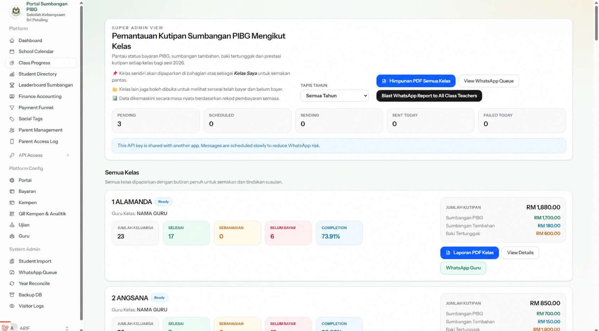
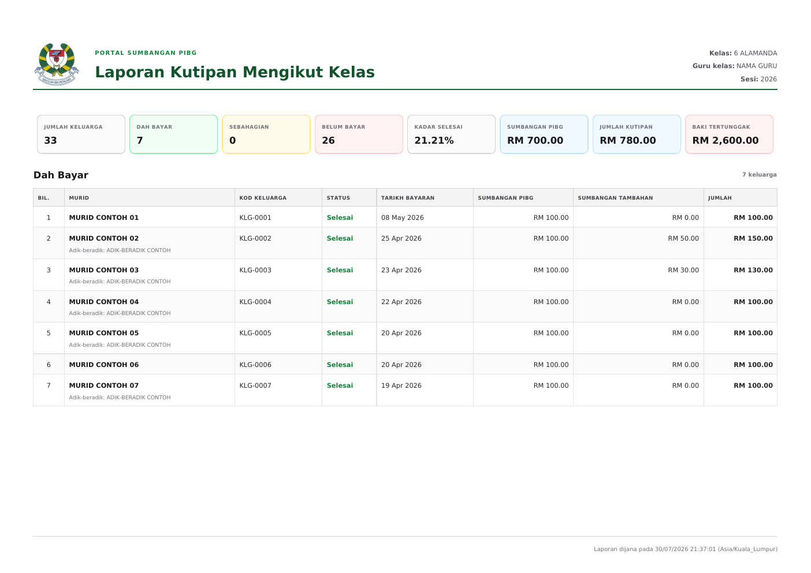
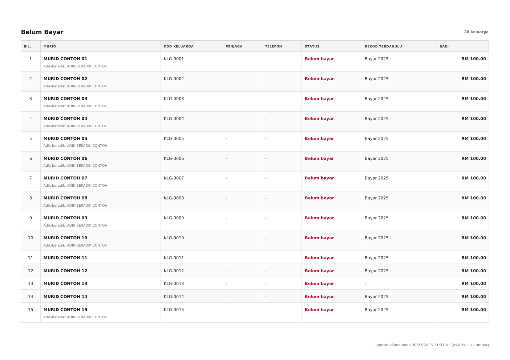
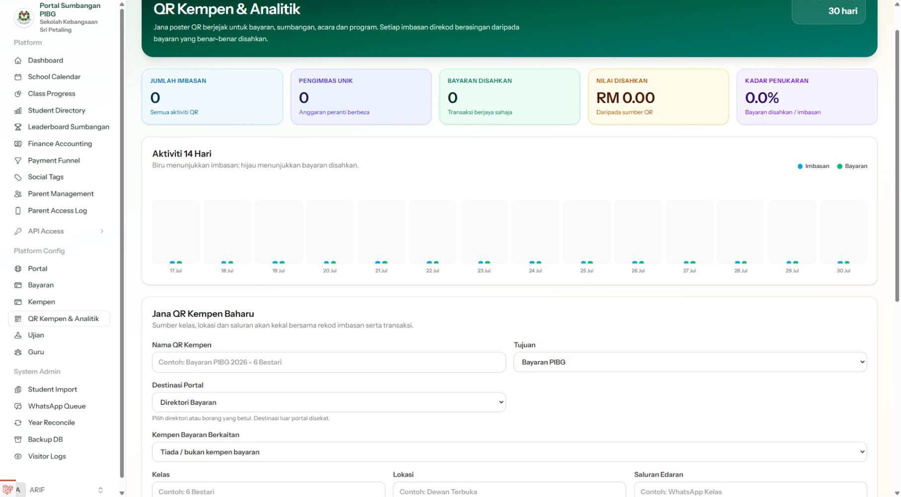
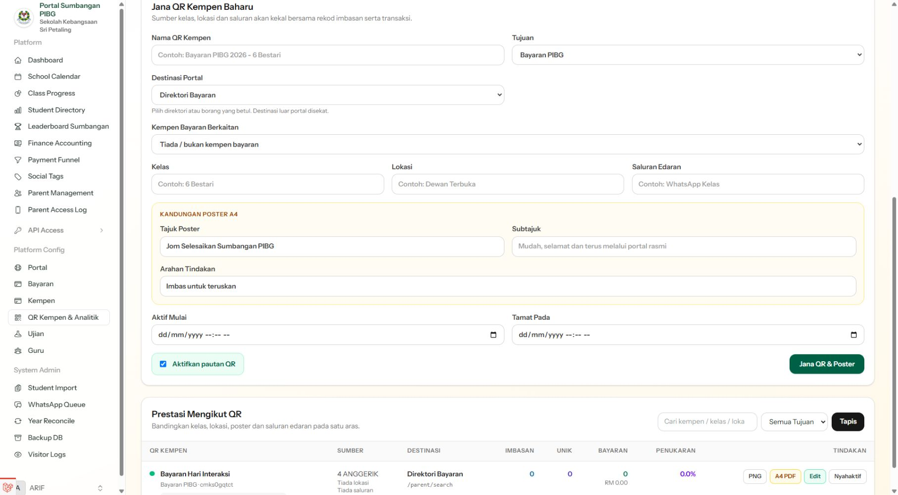
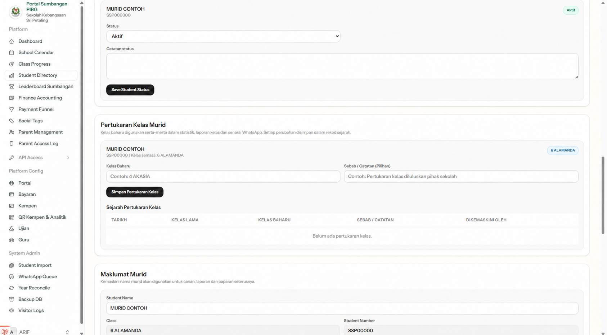

Ibu bapa
Semak keluarga, pelan ansuran, sejarah pembayaran dan resit.
Kemas kini produk · 30 Julai 2026
Satu ruang kerja untuk pihak sekolah memantau kutipan keluarga, menghasilkan laporan kelas, mengurus kempen QR dan mengekalkan sejarah perubahan murid.
Ringkasan, dah bayar dan belum bayar — siap dengan masa laporan dijana.
Ciri baharu
Setiap aliran memberi maklumat yang diperlukan mengikut peranan, tanpa mendedahkan data yang tidak berkaitan.
Laporan kelas
Guru dan pentadbir boleh menjana ringkasan kutipan, senarai keluarga dah bayar atau belum bayar bagi setiap kelas. Senarai “Belum Bayar” bermula pada halaman baharu supaya mudah dicetak dan diedarkan.



Kempen QR
Pentadbir boleh membina kod QR bagi saluran promosi, memuat turun poster dan melihat klik serta penukaran. Setiap kempen kekal boleh dibandingkan mengikut sumber dan tempoh.


Jejak pertukaran kelas
Perubahan kelas merekodkan kelas asal, kelas baharu, masa dan pentadbir yang membuat perubahan. Sejarah ini membantu semakan data tanpa meneka apa yang berlaku sebelum ini.

Akses mengikut peranan
Semak keluarga, pelan ansuran, sejarah pembayaran dan resit.
Pantau kelas, profil keluarga dan kemajuan kutipan.
Akses pemantauan lebih luas untuk membantu operasi sekolah.
Lihat prestasi kutipan, keluarga dan laporan berkaitan.
Urus konfigurasi, pengguna, kempen, kewangan dan audit.
Semua tangkap layar di halaman ini menggunakan data demonstrasi atau telah dinyahkenal pasti. Tiada nombor telefon, butiran bayaran atau identiti murid sebenar dipaparkan.
Dokumentasi projek
README merangkumi seni bina, persediaan tempatan, konfigurasi, ujian, keselamatan dan penerbitan produksi.
Buka dokumentasi lengkap